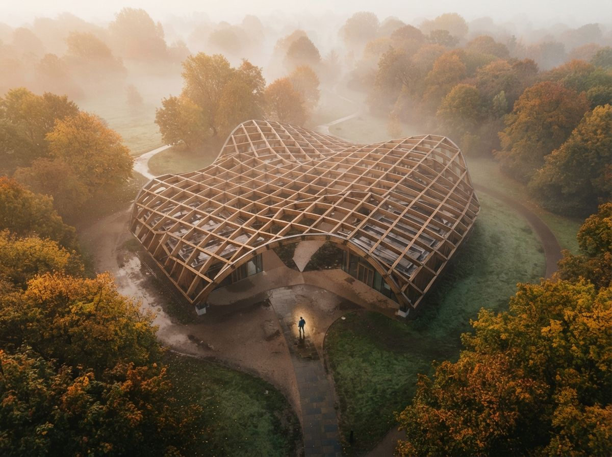

What is the best way to turn a hand sketch into a photorealistic image?
Scan or photograph clean, high-contrast linework. Use a tool that conditions on the drawing, such as a ControlNet or FLUX Canny graph, Veras, mnml.ai or ArchiVinci. Prompt for materials, light and weather, not form. Then lay the output over the sketch and check that the roof, openings and massing survived.
This page used to be a "field test" of three hand sketches through five tools, complete with strength settings, timings and a ranking table. ArchiGen never ran it. The sketches, the results and the verdicts are gone. What replaces them is narrower and more useful: what each tool's own pages say it does with a sketch, what it costs as listed on 28 October 2026, and a dated record of what changed, since that is what most people landing here asked.
What are the latest developments in AI sketch generators?
The short version: sketch-to-image stopped being a special mode. Two years ago you needed a control network bolted onto a diffusion model to make it follow a drawing. Now the general image models take a sketch as a reference and edit from it, and the architecture tools increasingly route to them.
| Date | Release | What it changed for sketches |
|---|---|---|
| Nov 2024 | FLUX.1 Canny and Depth | Open models "trained to enable structural guidance based on canny edges"; BFL now lists the API versions as deprecated, with open weights still on Hugging Face |
| 29 May 2025 | FLUX.1 Kontext | Edit an input image "via simple text instructions" |
| 26 Aug 2025 | Gemini 2.5 Flash Image (Nano Banana) | "Targeted transformation and precise local edits with natural language," $0.039 an image at launch |
| 20 Nov 2025 | Nano Banana Pro | Google pitched "turning sketches into products or blueprints into photorealistic 3D structures" |
| 20 Jan 2026 | Krea Realtime Edit | "Every brushstroke updates the image instantly" |
| 10 Feb 2026 | Veras 4.0 | Runs on Nano Banana Pro; turns "2D plans, drawings or even hand-sketched images into 3D scenes" |
| 26 Feb 2026 | Nano Banana 2 | Flash-speed version for "rapid edits and iteration" |
| 21 Apr 2026 | GPT Image 2 | OpenAI cites "stronger editing, better layouts, improved text rendering" |
| 14 May 2026 | Veras 4.5 | Freehand, line and curve sketch tools for selective edits inside Veras |
| 8 Sep 2026 | ChatGPT Images 2.5 | "Use Sketch to draw right in ChatGPT" |
| 24 Sep 2026 | Veras 5.2 | "Give the agent a rendering, a photo or a sketch... and it builds a 3D model" |
| 1 Oct 2026 | FLUX 3 Image | Generate, edit and "combine up to ten references" through one endpoint |
| 6 Oct 2026 | Nano Banana 2.1 | Google's latest "image generation and conversational editing model" |
| 15 Oct 2026 | Krea 3 | Krea says a "marker sketch" already has the design in it and the model "follows it closely" |
Two things stand out. The newest entries sketch to 3D as well as to pixels: Veras 5.2 builds a model from a drawing, which is a different promise with different risks. And every fidelity claim in that table is the vendor's own. None of them publishes an architectural accuracy benchmark. ArchiGen's documented floor-plan test of Nano Banana 2 against GPT Image 2, used a plan rather than a sketch, and the page itself says it changed model, endpoint and prompt format together.
How do the architecture tools accept a sketch?
Prices are as listed on 28 October 2026, in US dollars unless noted.
| Tool | Sketch input, per the vendor | Fidelity control the vendor documents | Where it runs | Price |
|---|---|---|---|---|
| mnml.ai | Phone photo, scan, iPad sketch or CAD line export | None named; "the tighter the drawing, the tighter the match" | Web; free SketchUp, Revit, Rhino, Grasshopper plugins | Lite $29/month; 100 free credits |
| ArchiVinci | Sketches, photos, floor plans, 3D models | Source-based modes versus creative modes | Web; SketchUp extension | $39/week, $79/month or $549/year, unlimited renders |
| Chaos Veras | "Upload a sketch or image, add a prompt" | Geometry Override: a 0 to 100 slider up to version 6, prompt wording from version 7 | Inside Revit, SketchUp, Rhino, Archicad, Vectorworks, Forma, Allplan | Starter, $16.90/month billed annually ($202.80/year); 14-day trial |
| Krea | Draw shapes on a live canvas; image references | "AI strength" documented for Realtime webcam mode | Web; Krea lists Revit, SketchUp, Rhino and others for live viewports | Free 100 units/day; Basic $9/month |
| ComfyUI | Any image, through a line or edge preprocessor | ControlNet or FLUX Canny/Depth strength, set per node | Local, on your GPU | Free software; model licences vary |
Sources: mnml.ai Sketch to Image and pricing, which also claims "about 15 seconds per render"; the ArchiVinci homepage, which offers three free renders, and its pricing page; the Veras page and Chaos's Geometry Override note; Krea's sketch-to-image page, Realtime docs, architecture page and pricing. The old version of this page credited mnml.ai and ArchiVinci with named style presets and timings that do not appear on either vendor's site.
Why do some tools follow the drawing and others drift?
Because the drawing is either a constraint or a suggestion, and the vendors rarely say which. The ControlNet paper describes adding "spatial conditioning controls" such as edges and depth to a diffusion model, so the image is generated around the lines you supply. The FLUX.1 Canny [dev] card says the same thing in plainer words: it generates "while following the structure of a given input image," under a non-commercial licence.
That mechanism has a catch an architect will recognise. An edge preprocessor traces every edge, so dimension strings, hatching and a coffee ring all become instructions. The ControlNet preprocessor pack offers Canny, Scribble, Lineart and M-LSD lines for exactly this reason: they read a drawing differently. Our ComfyUI sketch guide walks through which to pick, and the control-map guide covers when edges and depth disagree.
The reference-editing models work differently. They read the sketch as context and the prompt as an instruction, which is why the vendors' own advice converges on prompts. ArchiVinci says "prompts about materials, lighting, mood, or atmosphere are less likely to change the building form." Chaos suggests writing "strictly preserve massing and fenestration pattern" into a Veras prompt. When the fidelity dial is a sentence, you cannot set it to 0.85.
How do they compare with Fotor and general art tools?
Fotor's sketch to image turns drawings into "realistic, painting, anime, and more" and claims to keep "up to 98% of the original content and details." It is a general art converter with no architectural controls on the page, and Fotor's pricing did not display when checked. Fotor also offers the reverse, photo to sketch, which several of the queries on this topic mix up with sketch to photo. The product-design equivalent is Vizcom, which markets sketch to "full-fidelity 3D renders" to industrial designers, free to start and $49 per user a month for Professional.
For architecture the dividing line is less about image quality than about where the tool sits. A plugin that renders the live model, like Veras, keeps the drawing tied to geometry you can edit. An upload tool treats each sketch as a one-off. Our audit of a "photorealistic in minutes" guide shows how quickly that difference gets lost in tutorials.

Which should you try first?
Start from where your drawing lives. If it is already traced over a SketchUp or Revit view, a plugin tool with a documented fidelity control, Veras or mnml.ai, is the shortest path. If it is paper, photograph it flat, clean it, and try a reference-editing model with a materials-only prompt. If the geometry is the whole point and you can spare an afternoon, a local ControlNet or FLUX Canny graph gives you a strength number you can actually write down.
Whatever you pick, the test is the same, and it costs nothing: put the render over the sketch at 50 percent opacity. If the roof changed pitch, the tool drew its own building.
Evidence note. This article is based on vendor pages for mnml.ai, ArchiVinci, Chaos Veras, Krea, Vizcom and Fotor; release notes and announcements from Black Forest Labs, Google, OpenAI, Chaos and EvolveLab; the ControlNet paper; the FLUX.1 Canny model card; and the comfyui_controlnet_aux README. All were opened on 28 October 2026. ArchiGen did not test any tool named here; the one ArchiGen test linked above is described as its own page describes it. No image on this page is an output from any tool. Prices are as listed on 28 October 2026 and can change.
No affiliate relationship with any vendor named.